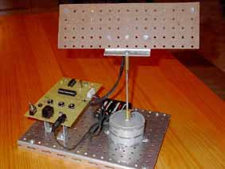
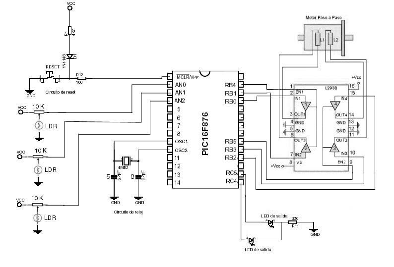

Práctica de Laboratorio de Arquitectura de las computadoras - 4º Curso -
Universidad Pontificia de Salamanca en Madrid
- Facultad de Informática -
PLATAFORMA ORIENTABLE HACIA LA LUZ
|
Autores: Oscar Herrera Cabanillas David Nicolas Villen Naranjo Tutelado por: Andres Prieto-Moreno Torres |
1.DESCRIPCION GENERAL DEL PROYECTO
Se trata de una plataforma que se orienta hacia donde detecte mas luz.
Dicha plataforma consta de tres LDR y dos diodos LED. La plataforma está montada sobre un motor que será el encargado de moverla. Dos de los sensores están dispuestos en cada lateral de dicha plataforma y el tercero está situado justo en el centro. Si se detecta mas luz por alguno de los sensores de los laterales , la plataforma girará hacia el lado en que se encuentre situado el sensor. Si se detecta mas luz por el sensor central, la plataforma permanece inmóvil.
El giro del motor se ha limitado a 180 º para evitar que los cables que conectan la plataforma con el microcontrolador se enreden con el eje del motor al realizar giros mas grandes. Desde la posición inicial en la que se encuentra la plataforma, se podrá girar 90 º hacia la derecha o hacia la izquierda. Se dispone de dos diodos LED que se iluminan cuando la plataforma ha alcanzado el tope de giro y por tanto no puede seguir girando en ese sentido.
[ Foto 1 ] [ Foto 2 ] [ Foto 3 ] [ Foto 4 ]
2. DESCRIPCION DEL FUNCIONAMIENTO
El encargado de gobernar todo el funcionamiento es un microcontrolador PIC16F876. Este utiliza un cristal de cuarzo de 4 MHZ.
El motor utilizado es un motor paso a paso bipolar de cuatro hilos. Para poder mover el motor con el microcontrolador se ha utilizado el driver L293b.
También se han utilizado tres potenciómetros para ajustar la cantidad de luz que pueden detectar los tres LDR también utilizados y para evitar que la luz ambiente provoque un funcionamiento anómalo en el funcionamiento.
Se han conectado los LDR en serie con los potenciómetros y se ha aplicado una tensión de 5v. En función de la cantidad de luz, la tensión en el punto medio (unión de un potenciómetro con la LDR) varía. En condiciones normales, se han ajustado los potenciómetros para que la tensión en el punto medio sea de 2,5 V.
Se ha utilizado el conversor A/D para convertir las señales analógicas.
El conversor A/D del PIC16F876 tiene 10 bits de resolución. La entrada
analógica de 0 V le corresponde el código digital de 00 0000 0000
y para la de 5 V un código de 11 1111 1111.
Contra mayor luz detecte un sensor, menor valor decimal tendrá la representación
con esos diez bits. Por otro lado, si detecta menos luz, mayor será el
valor decimal representado. Para evitar que la luz ambiente afecte, se han considerado
válidos los valores decimales comprendido entre 0-255 correspondientes
a la conversión.
3.ESQUEMA ELECTRICO
 |
4. COMPONENTES UTILIZADOS
| 1 Microcontrolador
PIC16F876 1 Cristal de cuarzo XT 4MHZ 2 Condensadores cerámicos de 27 pF 2 Resistencias 4K7 1 Resistencia 330 ohmios 1 Resistencia 100 ohmios 3 Potenciómetros 10K 3 Sensores de luz ( LDR ) 1 Motor paso a paso bipolar 1 Driver L293b 3 Diodos LED 1 Portapilas 1 Pulsador 1 Interruptor |
5. DESCRIPCION DEL SOFTWARE
Lo primero de todo, es configurar los pines de los puertos utilizados por el
motor y por los diodos LED de salida y los correspondientes a las LDR de entrada.
Una vez configurado esto, hay que sincronizar las bobinas del motor con una secuencia, para evitar que cuando el motor tenga que girar lo haga de forma extraña durante un breve espacio de tiempo.
Lo siguiente es entrar en el bucle principal de la aplicación que será un bucle infinito. Lo que hace es convertir los valores proporcionados por los sensores con el conversor A/D. Si el valor decimal de estos valores están comprendidos entre 0-255 se consideran valores válidos y se cargarán en registros para posteriormente poder compararlos. Los registros utilizados se llaman VALORA0, VALORA1 y VALORA2 correspondientes a cada uno de los valores proporcionados por los sensores. Si los valores no son validos, en estos registros se cargará el valor FF.
Posteriormente se comparan dichos valores y en función de esta comparación se girará hacia un lado u otro, o bien se volverá a realizar una conversión.
6. CODIGO FUENTE
LIST P=16f876
include "P16f876.INC"
RADIX HEX
WREG EQU 0x00
Z EQU 0x02
TEMP1 EQU 0x20 ; Registros de propósito general.
TEMP2 EQU 0x21
CONTA0 EQU 0x22
VALORA0 EQU 0x23 ; Valor de la conversion de los sensores
VALORA1 EQU 0x24
VALORA2 EQU 0x25
CONTADE EQU 0x26 ; Contador para limitar el giro
CONTAIZ EQU 0x27
;*****************************************************************
org 0x00
goto inicio
org 0x05
inicio: clrf INTCON ;Se anulan las interrupciones.
movlw 0X04
movwf CONTADE ; Limita el giro a la derecha.
movwf CONTAIZ ; limita el giro a la izquierda.
bcf STATUS,RP1
bsf STATUS,RP0 ; Seleccionamos el banco 1
movlw b'00000000'
movwf TRISB ; Puerto B de salida
movlw b'00000000' ; Puerto C de salida
movwf TRISC
movlw b'00000111' ; RA0,RA1 y RA2 como entradas
movwf TRISA
movlw b'10000000' ; Configuramos entradas analogicas
movwf ADCON1 ; Resultado justificado en ADRESH.
bcf STATUS,RP0 ; Seleccionamos banco1
clrf PORTA ; PORTA <- 0
clrf PORTC
movlw b'00110101' ; Secuencia de inicializacion del motor.
movwf PORTB ; Sincroniza las bobinas con una secuencia inicial
call TEMPO ; para evitar un comportamiento anómalo la
; primera que recibe una secuencia de giro
movlw b'00110101'
movwf PORTB
call TEMPO
movlw b'00110101'
movwf PORTB
call TEMPO
movlw b'00110101'
movwf PORTB
movlw b'00000000'; Se selecciona RA0 para realizar la conversion
movwf ADCON0
bsf ADCON0,0 ; Activa el convertidor A/D
convertir: call espera20u
bsf ADCON0,2 ; Inicia la conversion
espera: btfsc ADCON0,2 ; Espera a que termine la conversion
goto espera
bsf STATUS,RP0
movf ADRESL,0
bcf STATUS,RP0
movwf VALORA0
movf ADRESH,0
sublw b'00000000' ; Si ADRESH es 0x00, VALORA0=ADRESL
btfsc STATUS,Z
goto convertir2
movlw b'11111111' ; Si ADRESH <> 0x00, VALORA0=0xFF
movwf VALORA0
convertir2: bsf ADCON0,3 ; Seleccionamos RA1
call espera20u
bsf ADCON0,2 ; Inicia la conversion
espera2: btfsc ADCON0,2 ; Espera a que termine la conversion
goto espera2
bsf STATUS,RP0;
movf ADRESL,0
bcf STATUS,RP0
movwf VALORA1
movf ADRESH,0
sublw b'00000000' ;Si ADRESH es 0x00, VALORA1=ADRESL
btfsc STATUS,Z
goto convertir3
movlw b'11111111'
movwf VALORA1 ; Si ADRESH <> 0x00, VALORA0=0xFF
convertir3: bcf ADCON0,3 ;
bsf ADCON0,4 ; Seleccionamos RA2
call espera20u
bsf ADCON0,2 ; Inicia la conversion
espera3: btfsc ADCON0,2 ; Espera a que termine la conversion
goto espera3
bsf STATUS,RP0;
movf ADRESL,0
bcf STATUS,RP0
movwf VALORA2
movf ADRESH,0
sublw b'00000000' ;Si ADRESH es 0x00, VALORA1=ADRESL
btfsc STATUS,Z
goto comparar
movlw b'11111111'
movwf VALORA2 ; Si ADRESH <> 0x00, VALORA0=0xFF
comparar: movf VALORA0,0
subwf VALORA2,0 ; Comparamos los extremos
btfsc STATUS,Z
goto configura ;Si los extremos son iguales, vuelve a coger valores
btfss STATUS,0 ; Vemos cual es el que ha detectado mas luz
goto compara2 ; RA2 Detecta mas luz
compara1: movf VALORA0,0 ; RA0 Detecta mas luz
subwf VALORA1,0 ; Restamos RA0 - RA1 (Central y extremo con mayor luz)
btfsc STATUS,0
goto derecha ; RA0 es el sensor que detecta mas luz
goto configura ; RA1 es el central y es el que tiene mas luz
compara2: movf VALORA2,0
subwf VALORA1,0 ; Restamos RA2 - RA1 (Central y extremo con mayor luz)
btfsc STATUS,0;
goto izquierda ; RA2 es el sensor que detecta mas luz
configura: movlw b'00000000' ; Se selecciona RA0 para realizar la conversion
movwf ADCON0
bsf ADCON0,0 ; Activa el convertidor A/D
goto convertir
derecha: decfsz CONTADE,1 ; Comprobamos que no ha llegado al tope
goto derechaok ; Si llega al tope que no gire
incf CONTADE,1 ; y vuelva a tomar valores
movlw 0x04
movwf PORTC
goto configura
derechaok: movlw 0x00
movwf PORTC
incf CONTAIZ,1
movlw b'00110101' ; primer paso
movwf PORTB
call TEMPO ;Temporización antes de realizar el siguiente paso
movlw b'00110110' ;segundo paso.
movwf PORTB
call TEMPO
movlw b'00111010' ;tercer paso.
movwf PORTB
call TEMPO
movlw b'00111001' ;cuarto y último paso
movwf PORTB
call TEMPO
goto configura
izquierda: decfsz CONTAIZ,1 ; Comprobamos que no ha llegado al tope
goto izquierdaok ; Si llega al tope que no gire
incf CONTAIZ,1 ; y vuelva a tomar valores
movlw 0x08
movwf PORTC
goto configura
izquierdaok: movlw 0x00
movwf PORTC
incf CONTADE,1
movlw b'00111001' ; Primer paso para el giro hacia la derecha.
movwf PORTB
call TEMPO ;Temporización antes de realizar el siguiente paso
movlw b'00111010' ;Segundo paso.
movwf PORTB
call TEMPO
movlw b'00110110' ;Tercer paso.
movwf PORTB
call TEMPO
movlw b'00110101' ;Último paso.
movwf PORTB
call TEMPO
goto configura ;****************************************************************************************** ;TEMPO Subrutina de temporización para poder enviar otra secuencia al motor. TEMPO movlw 0xFF ;carga FF en TEMP1
movwf TEMP1
clrf TEMP2 ;Carga 0 en TEMP2
TEMPO_1 decfsz TEMP2,1 ;Decrementa TEMP2 y si es 0 salta goto TEMPO_1 ;volver a TEMPO_1
decfsz TEMP1,1 ;Decrementa TEMP1 y si es 0 salta
goto TEMPO_1 ;volver a TEMPO_1
RETURN
;**********************************************************************************
; espera20u Subrutina de espera para poder volver a tomar otro valor del conversor
espera20u movlw 0x05
movwf CONTA0
ret1 decfsz CONTA0,1
goto ret1
return
end
|
7. PROBLEMAS Y SOLUCIONES
A lo largo del desarrollo del proyecto nos hemos encontrado con diversos problemas
que al final fueron resueltos con éxito. Mostramos una enumeración
de los mismos con sus soluciones:
1. El motor al recibir una secuencia para girar se comporta de manera extraña
Al enviar diferentes secuencias al motor, este empezaba a vibrar y ha realizar giros incontrolados. Inicialmente pensamos que podría deberse al driver L293b y después de revisar todas las conexiones compramos otro en la tienda de electrónica. Al sustituir el antiguo por el nuevo, el motor seguía comportándose de la misma forma. La segunda idea que se nos ocurrió era ver que secuencia estaba llegando al motor, por tanto se decidió poner unos diodos LED's. Nuestra sorpresa fue los diodos LED's estaban continuamente iluminados por lo que decidimos poner una pequeña pausa entre secuencia y secuencia. Esta era la causa del problema. Hay que pausar las secuencias enviadas al motorpara que este funcione bien.
2. Al enchufar la alimentación en el circuito, cuando el motor tenía
que girar por primera vez, tenía un comportamiento anómalo.
Esto es debido a que las bobinas del motor inicialmente no se encuentran en un estado conocido y hay que sincronizarlas con una secuencia inicial. Esta secuencia tiene que ser enviada antes de que hagamos girar el motor a nuestro antojo. La secuencia inicial puede observarse en el código.
3. No podemos cargar el valor de la conversión del registro ADRESH en un registro de propósito general.
Esto fue un fallo de programación muy común cuando uno está familiarizandose con el ensamblador del micro. El problema estaba en que no cambiamos de banco para realizar la carga del registro de propósito general a partir del registro ADRESH.
4. El programa no se ejecutaba a no ser que tocáramos con el dedo
el oscilador
La fuente de este error era la pata MCLR del PIC encargada de producir un reset al micro. Esta pata se activa a nivel bajo y nosotros en principio la dejábamos al aire. La solución fue poner un pulsador y una resistencia de pull-up. Esta puede observarse en el esquema del circuito.
[ Foto 1 ] [ Foto
2 ] [ Foto 3 ] [
Foto 4 ]
| IEA ROBOTICS | Página de inicio | Dirección de contacto |